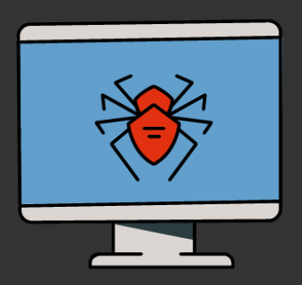
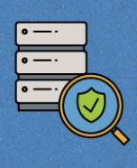
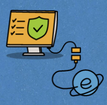

Виды вредоносного ПО

Вирус - программа, которая добfвляет вредоносный код в приложения, установленные на Вашем компьютере, тем самым заражая их.
Основная цель вируса - распространение. В процессе распространения вирусы могут удалить файлы и даже операционную систему, испортить структуру размещения данных и блокировать работу пользователей.
Червь - вредоносная программа, которая распространяется через сетевые ресурсы. Черви получили свое название из способности "переползать" с компьютера на компьютер, используя сети, электронную почту и другие информационные каналы.
Черви проникают на компьютер, вычисляют сетевые адреса других устройств и рассылают по ним свои копии.
Троян - программа, которая выполняет несанкционированные пользователем действия на поражаемых компьютерах. Троянские программы не способен самостоятельно проникать на компьютеры, поэтому злоумышленники распространяют их под видом легального ПО (отсюда оно и получило свое название), которое пользователь запускает самостоятельно и заражает свое устройство.
Бот - это автономное ПО. Чаще всего бот в составе ботнета является программой, которую скрытно устанавливают на устройство жертвы. Бот позволяет злоумышленнику выполнять различные действия с использованием ресурсов зараженного компьютера. Обычно боты используются для рассылки спама, перебора паролей на удаленной системе или атак для отказа в обслуживании.
Шифровальщик - программа, которая шифрует файлы на устройстве (документы, фотографии, базы данных) таким образом, чтобы их нельзя было открыть.
В результате несанкционированного шифрования пользователь не сможет воспользоваться файлами, а за расшифровку создатели вредоносной программы потребуют выкуп.
Не платите выкуп, так как не факт, что Вы расшифруете файлы. И сейчас много вирусов, уничтожающих данные, но маскирующихся под шифровальщики.

Бэкдор - это не конкретный вид вредоносного обеспечения, а метод атаки, при котором злоумышленники используют дефекты программы или оборудования, чтобы удаленно управлять Вашим устройством:
- изменять, копировать или удалять данные;
- подслушивать Ваши разговоры через микрофон;
- подсматривать за Вами с помощью камеры и т.д.
Как выбрать антивирус?
При выборе антивируса обратите внимание, чтобы он обладал функцией сканирования в режиме реального времени.
Такие антивирусы смогут перехватить вредоносные программы, пока они не проникли в систему.
Антивирусные программы бывают нескольких видов:
Как правило бесплатный сервис, который находит и удаляет вредоносные программы без установки антивирусного ПО.
Защищает Ваши гаджеты. Основная их задача - обнаружение и блокировка вредоносных программ через Ваш телефон.
Программы, которые защищают Ваши пароли и интернет-соединение, очищают систему от вирусов.
Программа, устанавливается на Ваш компьютер и имеет полный функционал защиты.
Настройка и использование антивируса
Чтобы обеспечить максимальную защиту своего устройства, следуйте рекомендациям по установке и использованию антивируса:
Устанавливайте антивирус до первого подключения компьютера к Интернету.
Используйте только один антивирус на устройстве. Применение нескольких приведет к замедлению работы компьютера.
Защитите конфигурацию антивируса паролем, чтобы вредоносные программы не смогли настроить его "под себя".
Регулярно проводите полное сканирование системы.